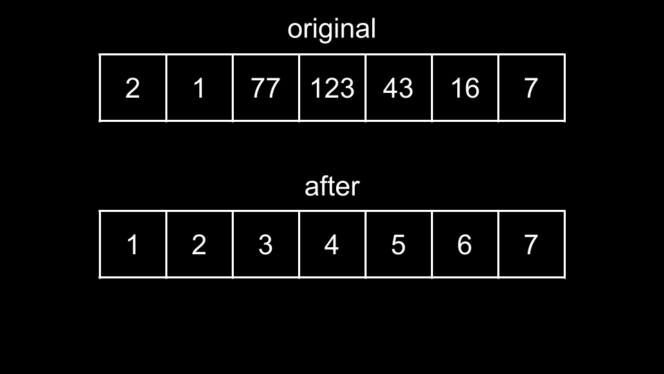
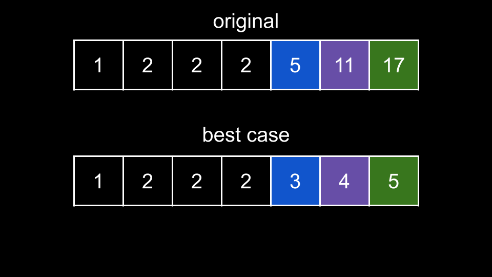
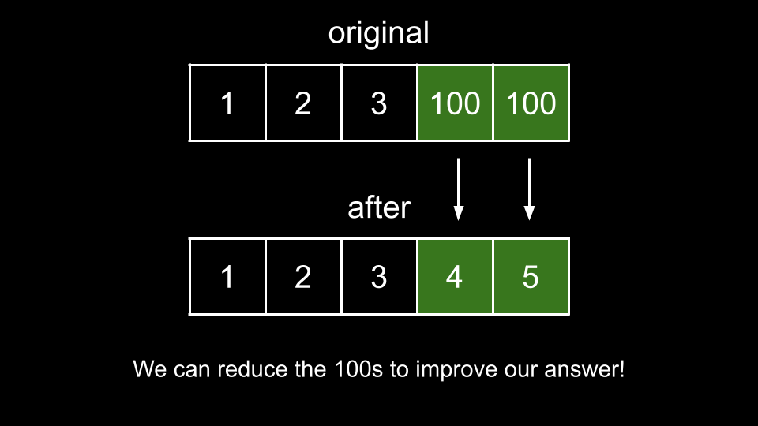
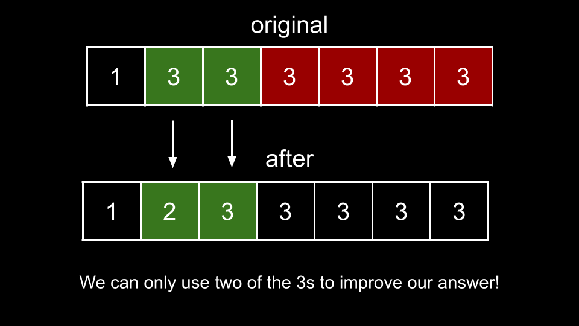

Intuition
In this problem, we need to maximize any value under the following rules:
arr[0] = 1.1.For an array of length n, the biggest value we could have is n. This scenario would be when
the array is [1, 2, 3, ..., n].

This is because each adjacent element differs by at most 1, so the best we could do is to just count up
from 1, which the first element must be. When is this scenario impossible?
Because we are not allowed to increase elements, the best-case scenario is impossible when the original elements are not large enough to support the counting.
So what should our strategy be? We start at the first index with our answer ans = 1. This is because by
the rules of the problem, the first element must be equal to 1. Now, we iterate over the rest of the
indices and try to increment by 1 each time.
If we can successfully increment, we update ans = ans + 1. We can successfully increment if there is an
element in arr that is greater than or equal to ans + 1. Any element that is greater than
or equal to ans + 1 can be reduced to ans + 1 according to the rules. However, once we
reduce it, we can't use that element anymore in the future.
So which element should we choose at each step? We should greedily choose the smallest element that
is greater than or equal to ans + 1. The reason we want the smallest element is because choosing a
larger element does not give us any additional benefit - we will only increment our answer by 1
regardless. However, choosing the smallest element "saves" the larger elements to be reduced in the future.
For example, let's say you had ans = 3 and there was a 4 and a 5 in the array.
If you chose to reduce the 5 to a 4, you would not be able to reach ans = 5
anymore. However, if we use the 4 instead, then the 5 remains available when we want to
increment ans to 5.
Note that because we are allowed to rearrange elements freely, their initial order is irrelevant. As such, we will
start by sorting arr so we can process the elements in ascending order.
We also initialize ans = 1 and begin iterating over arr, starting from index 1.
The reason we skip index 0 is because arr[0] = 1 - we have no choice. At each index i,
we try to increment ans by using arr[i]. If arr[i] is greater than or equal
to ans + 1, then we can reduce arr[i] (or keep it the same) to ans + 1.

In the above example, we have an original sorted arr = [1, 2, 2, 2, 5, 11, 17]. Up to index i =
3, we cannot have ans = 3 because none of the elements are large enough to support it. However,
once we reach the 5, we can reduce it to 3. Then we reduce the 11 to
4 and the 17 to 5. This makes sure we follow the rule where each adjacent
element differs by at most 1 while also maximizing a value since we are incrementing at every
opportunity.
Algorithm
arr in ascending order.ans = 1.i over the indices of arr, starting from i = 1:
arr[i] >= ans + 1, increment ans.ans.Implementation
Java
class Solution {
public int maximumElementAfterDecrementingAndRearranging(int[] arr) {
Arrays.sort(arr);
int ans = 1;
for (int i = 1; i < arr.length; i++) {
if (arr[i] >= ans + 1) {
ans++;
}
}
return ans;
}
}
C++
class Solution {
public:
int maximumElementAfterDecrementingAndRearranging(vector& arr) {
sort(arr.begin(), arr.end());
int ans = 1;
for (int i = 1; i < arr.size(); i++) {
if (arr[i] >= ans + 1) {
ans++;
}
}
return ans;
}
};
Python3
class Solution:
def maximumElementAfterDecrementingAndRearranging(self, arr: List[int]) -> int:
arr.sort()
ans = 1
for i in range(1, len(arr)):
if arr[i] >= ans + 1:
ans += 1
return ans
Complexity Analysis
Given nn
as the length of arr,
Time complexity: O(n⋅logn)O(n \cdot \log{}n)
We sort arr which costs O(n⋅logn)O(n \cdot \log{}n). Then, we iterate over it once which costs O(n)O(n).
Space Complexity: O(logn)O(\log n) or O(n)O(n)
The space complexity of the sorting algorithm depends on the implementation of each programming language:
Intuition
While we are not directly sorting any data, this approach uses similar principles as Counting Sort.
Recall that in the best-case scenario of an array of length n, our answer will be n. This
is because the first element must be 1, and we can only increment by 1 for each additional
element. Thus, we will never have any elements greater than n in our final array.
Since our range of values is bounded by [1, n], we don't actually need to sort the array. Instead, we
will iterate over its bounded values in a more efficient way.
We will initialize an array counts as a counter, where counts[x] is equal to the frequency
of x in arr. Because we don't care about values greater than n, if there are
any numbers in arr that are greater than n, we will simply treat them as n.
For example, if we had arr = [1, 100, 100, 100], then we would have counts[4] = 3. Here,
we have n = 4, so we treat each of the 100 as 4, and thus the count of 4
is 3.
Once we have the frequency of each element, we will follow a process similar to the one from the previous approach.
First, we set ans = 1. Now, we iterate over each value num in the range [2,
n]. For each value num, we check how many times num appears in arr
by referencing count[num]. We have two possibilities:
ans + count[num] <= num. This would happen in a scenario like [1, 2, 3, 100, 100].
It means that there are less occurrences of num in arr than there are "spots" in the
range [ans + 1, num]. In the above example, if ans = 3 and we have num =
100, there are 97 "spots" between 3 and 100: the spots are 4, 5, 6,
..., 99, 100. Thus, we can reduce every instance of num to improve on ans,
and we perform ans += counts[num], resulting in ans = 5. Note that the case of count[num]
= 0 is handled by this scenario since adding 0 doesn't change anything.

ans + count[num] > num. This would happen in a scenario like [1, 3, 3, 3, 3, 3, 3].
It means there are more num than there are spots. In scenario 1, we are happy to reduce every
instance of num to improve our answer. In this scenario, we can't improve our answer by reducing
all of num, because we would need elements greater than num. So far, we can only raise
ans to a maximum of num. Thus, we simply set ans = num.

The two possibilities can be summarized with the following line:
ans = min(ans + counts[num], num)
Essentially, at each num, we increment ans by filling as many "spots" as we can using
reduced num. However, the total number of filled "spots" cannot exceed num as the range
[1, 2, ..., num] is fixed and we cannot increase our current elements to be larger than
num.
Algorithm
counts with length n + 1 and values of 0.num in arr:
counts[min(num, n)].ans = 1.num from 2 to n:
ans = min(ans + counts[num], num).ans.Implementation
Java
class Solution {
public int maximumElementAfterDecrementingAndRearranging(int[] arr) {
int n = arr.length;
int[] counts = new int[n + 1];
for (int num : arr) {
counts[Math.min(num, n)]++;
}
int ans = 1;
for (int num = 2; num <= n; num++) {
ans = Math.min(ans + counts[num], num);
}
return ans;
}
}
C++
class Solution {
public:
int maximumElementAfterDecrementingAndRearranging(vector& arr) {
int n = arr.size();
vector counts = vector(n + 1, 0);
for (int num : arr) {
counts[min(num, n)]++;
}
int ans = 1;
for (int num = 2; num <= n; num++) {
ans = min(ans + counts[num], num);
}
return ans;
}
};
Python3
class Solution:
def maximumElementAfterDecrementingAndRearranging(self, arr: List[int]) -> int:
n = len(arr)
counts = [0] * (n + 1)
for num in arr:
counts[min(num, n)] += 1
ans = 1
for num in range(2, n + 1):
ans = min(ans + counts[num], num)
return ans
Complexity Analysis
Given nn
as the length of arr,
Time complexity: O(n)O(n)
To calculate counts, we iterate over arr once which costs O(n)O(n). Then, we
iterate between 2 and n. which costs O(n)O(n).
Space complexity: O(n)O(n)
counts has a length of n+1n + 1.